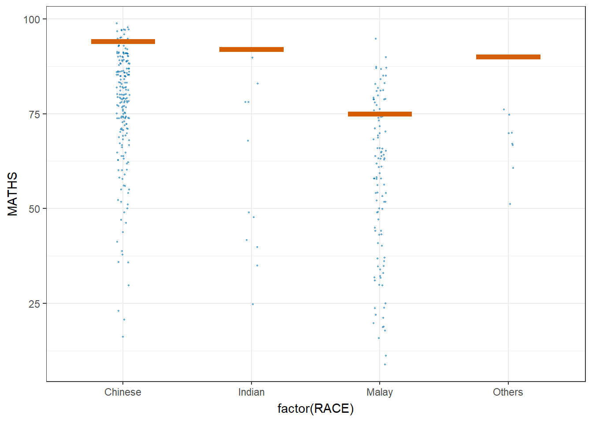

Code
pacman::p_load(tidyverse, plotly, crosstalk, DT, ggdist, gganimate)In this exercise using Exam_data, we will be using tidyverse, plotly, crosstalk, DT, ggdist and gganimate.
pacman::p_load(tidyverse, plotly, crosstalk, DT, ggdist, gganimate)exam <- read_csv("data/Exam_data.csv")The code chunk below performs the followings:
my_sum.my_sum <- exam %>%
group_by(RACE) %>%
summarise(
n=n(),
mean=mean(MATHS),
sd=sd(MATHS)
) %>%
mutate(se=sd/sqrt(n-1))
my_sum# A tibble: 4 × 5
RACE n mean sd se
<chr> <int> <dbl> <dbl> <dbl>
1 Chinese 193 76.5 15.7 1.13
2 Indian 12 60.7 23.4 7.04
3 Malay 108 57.4 21.1 2.04
4 Others 9 69.7 10.7 3.79Next, the code chunk below will
knitr::kable(head(my_sum), format = 'html')| RACE | n | mean | sd | se |
|---|---|---|---|---|
| Chinese | 193 | 76.50777 | 15.69040 | 1.132357 |
| Indian | 12 | 60.66667 | 23.35237 | 7.041005 |
| Malay | 108 | 57.44444 | 21.13478 | 2.043177 |
| Others | 9 | 69.66667 | 10.72381 | 3.791438 |
The code chunk below is used to reveal the standard error of mean maths score by race.
ggplot(my_sum) +
geom_errorbar(
aes(x=RACE,
ymin=mean-se,
ymax=mean+se),
width=0.2,
colour="black",
alpha=0.9,
linewidth=0.5) +
geom_point(aes
(x=RACE,
y=mean),
stat="identity",
color="red",
size = 1.5,
alpha=1) +
ggtitle("Standard error of mean maths score by race")
Plotting the 95% confidence interval of mean maths score by race. The error bars are sorted by the average maths scores.
my_sum2 <- exam %>%
group_by(RACE) %>%
summarise(
n=n(),
mean=mean(MATHS),
sd=sd(MATHS)
) %>%
mutate(se=sd/sqrt(n-1)) %>%
mutate(ci95= qt(c(0.05, 0.95), length(n) - 1) * se) %>%
mutate(ci99= qt(c(0.01, 0.99), length(n) - 1) * se)
my_sum2$RACE = with(my_sum2, reorder(RACE, -mean))
ggplot(my_sum2) +
geom_errorbar(
aes(x=RACE,
ymin=mean-ci95,
ymax=mean+ci95),
width=0.2,
colour="black",
alpha=0.9,
linewidth=0.5) +
geom_point(aes
(x=RACE,
y=mean),
stat="identity",
color="red",
size = 1.5,
alpha=1) +
ggtitle("95% Confidence Interval of mean maths score by race")Interactive error bars for the 99% confidence interval of mean maths score by race.
colnames(my_sum) <- c('Race', 'No. of pupils','Avg Scores','Std Dev','Std Error')
colnames(my_sum2) <- c('Race', 'No. of pupils','Avg Scores','Std Dev','Std Error', '95% CI', '99% CI')
DT::datatable(my_sum, class= "compact")d <- highlight_key(my_sum)
p <- ggplot(my_sum2) +
geom_errorbar(
aes(x=Race,
ymin=`Avg Scores`-`99% CI`,
ymax=`Avg Scores`+`99% CI`),
width=0.2,
colour="black",
alpha=0.9,
linewidth=0.5) +
geom_point(aes
(x=Race,
y=`Avg Scores`,
text=paste("N=",`No. of pupils`,"<br>99% CI=",`99% CI`)),
stat="identity",
color="red",
size = 1.5,
alpha=1) +
ggtitle("99% Confidence Interval of \n mean maths score by race")
gg <- highlight(ggplotly(p), tooltip="text")
# "plotly_selected")
crosstalk::bscols(gg,
DT::datatable(d),
widths = 5)
In the code chunk below, stat_pointinterval() of ggdist is used to build a visual for displaying distribution of maths scores by race.
NOTE: This function comes with many arguments, refer to the syntax reference here for more detail.
exam %>%
ggplot(aes(x = RACE,
y = MATHS)) +
stat_pointinterval() +
labs(
title = "Visualising confidence intervals of mean math score",
subtitle = "Mean Point + Multiple-interval plot")
exam %>%
ggplot(aes(x = RACE, y = MATHS)) +
stat_pointinterval(.width = 0.95,
.point = median,
.interval = qi) +
labs(
title = "Visualising confidence intervals of mean math score",
subtitle = "Mean Point + Multiple-interval plot")
Showing the plots with 95% and 99% confidence intervals.
exam %>%
ggplot(aes(x = RACE,
y = MATHS)) +
stat_pointinterval(
show.legend = FALSE) +
labs(
title = "Visualising confidence intervals of mean math score",
subtitle = "Mean Point + Multiple-interval plot")
In the code chunk below, stat_gradientinterval() of ggdist is used to build a visual for displaying distribution of maths scores by race.
NOTE: This function comes with many arguments, refer to the syntax reference here for more detail.
exam %>%
ggplot(aes(x = RACE,
y = MATHS)) +
stat_gradientinterval(
fill = "skyblue",
show.legend = TRUE
) +
labs(
title = "Visualising confidence intervals of mean math score",
subtitle = "Gradient + interval plot")
Step 1: Installing ungeviz package (only need to perform this step once1)
# devtools::install_github("wilkelab/ungeviz")Step 2: Launch the application in R
library(ungeviz)ggplot(data = exam,
(aes(x = factor(RACE), y = MATHS))) +
geom_point(position = position_jitter(
height = 0.3, width = 0.05),
size = 0.4, color = "#0072B2", alpha = 1/2) +
geom_hpline(data = sampler(25, group = RACE), height = 0.6, color = "#D55E00") +
theme_bw() +
# `.draw` is a generated column indicating the sample draw
transition_states(.draw, 1, 3)
ggplot(data = exam,
(aes(x = factor(RACE),
y = MATHS))) +
geom_point(position = position_jitter(
height = 0.3,
width = 0.05),
size = 0.4,
color = "#0072B2",
alpha = 1/2) +
geom_hpline(data = sampler(25,
group = RACE),
height = 0.6,
color = "#D55E00") +
theme_bw() +
transition_states(.draw, 1, 3)